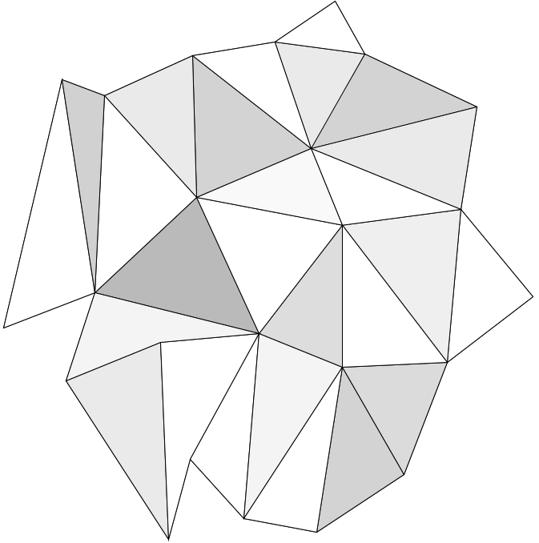
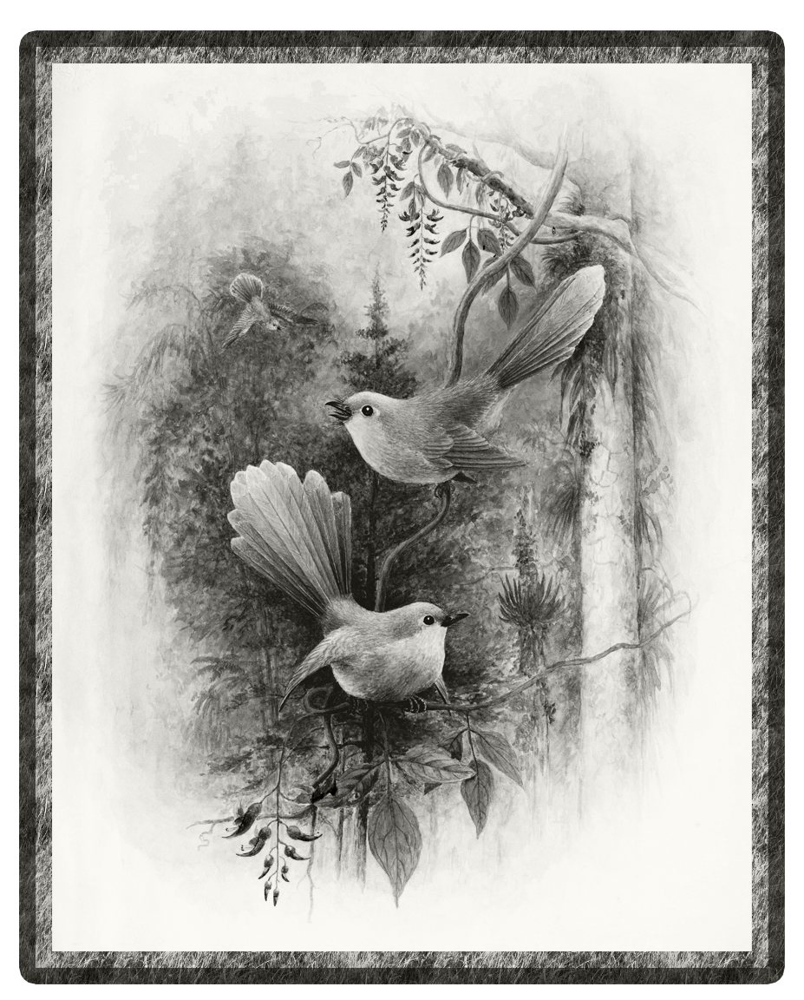
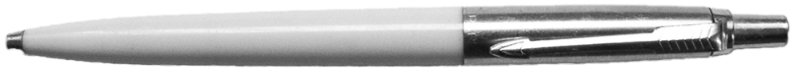

.png)
Kani était un petit lapin en origami qui aimait contempler les étoiles. Chaque nuit, il passait des heures à regarder le ciel, fasciné par la beauté de la voûte céleste. Il rêvait de toucher les étoiles un jour, de voyager dans cet océan d'astre et de découvrir de nouveaux horizons. Mais pour un petit lapin en papier, atteindre les étoiles semblait impossible.
Un jour, Kani décida de partir à la recherche d'un moyen de réaliser son rêve. Il se mit en quête d'un transport sur le bureau, mais ne trouva rien de satisfaisant. Finalement, il se rappela avoir vu un avion en papier proche de la fenêtre. Il décida de s'en servir pour voyager dans le ciel et peut-être même atteindre les étoiles.
  Alors que Kani était en train de se diriger vers la fenêtre où se trouvait l'avion en papier, il se rendit compte qu'il était suivi par une main géante. Cette main appartenait à un artiste qui aimait créer des origamis en utilisant les feuilles de papier où Kani vivait. Le petit lapin en papier se mit à courir aussi vite qu'il le pouvait pour échapper à l'énorme main.
Kani courait aussi vite qu'il le pouvait, mais la main géante était toujours à ses trousses. Il se cacha à l'intérieur d'un bouquin et tenta de reprendre son souffle. La main passa devant lui sans le voir, et Kani se sentit soulagé.
Kani sortit de sa cachette et se mit en quête de l'avion en papier. Il finit par le trouver plus loin sur le bureau.
Kani décolla avec l'avion en papier et s'envola dans le ciel. Finalement, après un long vol, Kani atteignit les étoiles. Il était émerveillé par leur beauté et leur éclat. Il se sentit tellement petit devant leur grandeur, mais en même temps, il se sentit tellement grand d'avoir réalisé son rêve malgré les obstacles. Kani avait atteint les étoiles, et rien ne pourrait jamais lui enlever cette sensation de fierté et de bonheur. Le petit lapin en papier avait prouvé qu'il était possible de réaliser ses rêves, même si cela semblait impossible au départ.